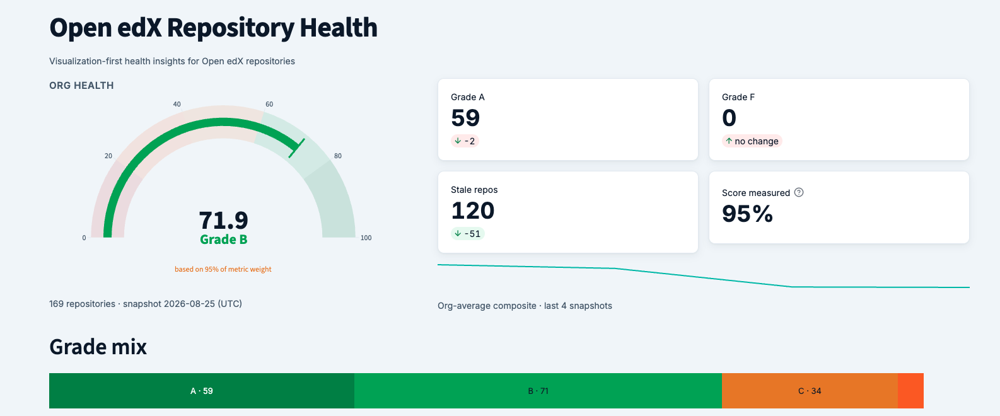

Open edX Repo Health Dashboard
Live, public visibility into the health of the Open edX repository fleet, graded against open industry standards - delivered by Usama Sadiq

openedx-health-dashboard.streamlit.app · live
169
Repos Tracked
119
Health Checks
9
Scored Metrics
Daily
Data Refresh
Built to Standards
Not homegrown heuristics - every metric maps to CHAOSS metrics and OpenSSF Scorecard checks, rolled into A-F letter grades.
Beyond Reporting
Historical trends and deltas, deep-linkable filtered views, and per-repo remediation snippets that tell maintainers how to fix a failing check.
Built On
openedx/edx-repo-health checks → openedx/wg-maintenance pipeline → org-health-dashboard (public, AGPL-3.0) - every piece of the chain lives in the open.